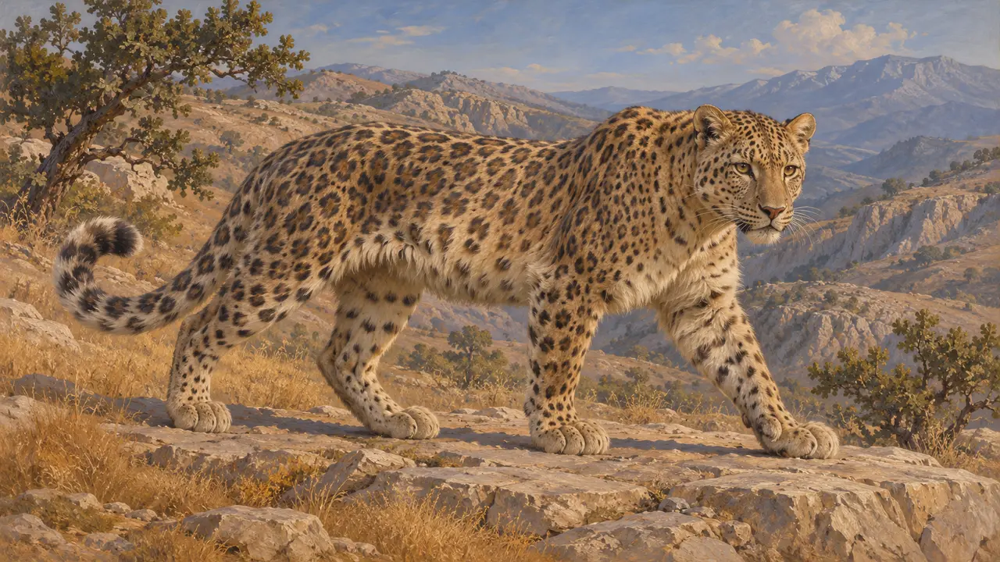
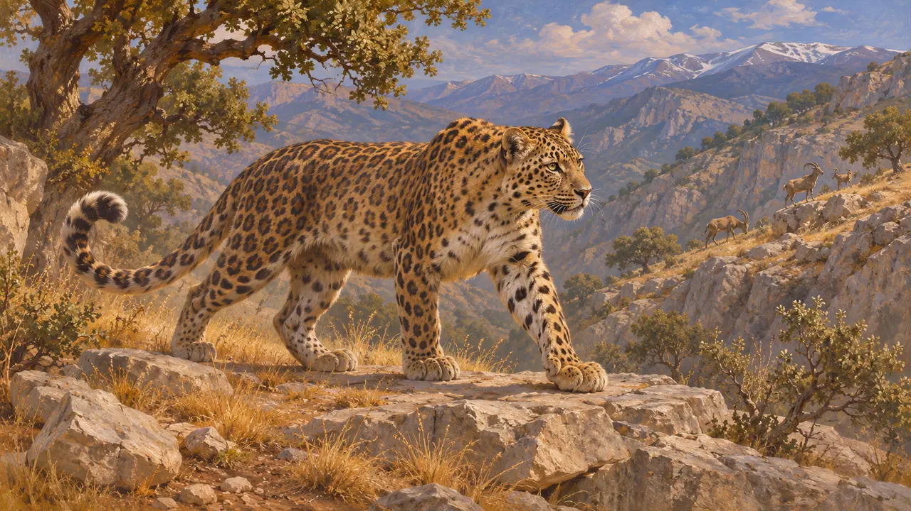
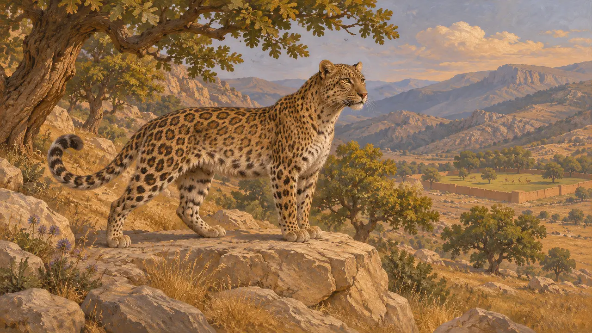
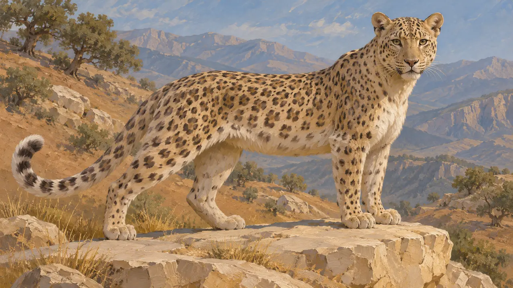

پلنگ ایرانی
پلنگ زاگرس و کوههای پیرامون آن، گربهای وحشی از سرزمینهای پارسی، سدههای 6 تا 5 پ.م.
در بازی: مرحلهٔ ۳: دروغ
پلنگ شکارچی بومی کوهستانهای غرب آسیا، از جمله زاگرس، بود؛ جایی که بازی ماد را در آن قرار میدهد. متون باستانی دورهٔ پارسی دربارهٔ خود این جانور کم میگویند، پس تصویر ارائهشده بیشتر بر گسترهٔ طبیعی این گونه و بر آنچه نویسندگان یونانی دربارهٔ جانوران وحشی و شکارگاههای شاهی ثبت کردهاند استوار است.
در بازی: بازی در مرحلهٔ بغستان یک پلنگ را بر تپههای ماد ترسیم میکند. این فقط صحنهپردازی است و هیچ قاعدهای آن را در نظر نمیگیرد. در هیچ منبعی پلنگی به رویدادهای بیستون پیوند داده نشده است.

گربهسانی از سرزمینهای کوهستانی
روایت باستانینویسندگان یونانی پلنگ را «پاردالیس» مینامیدند. هرودوت آن را گذرا در میان جانوران وحشی نام میبرد، اما هیچ توصیفی از پلنگ پارسی نمیدهد. گزنفون گزارش میدهد که پردیسهای پارسی جانوران وحشی را برای شکار نگه میداشتند، هرچند این بخش از پلنگها بهطور ویژه یاد نمیکند.
Xenophon, Anabasis 1.2

گستره و عادتها
مورد مناقشهپلنگ ایران، با زیرگونهٔ Panthera pardus tulliana، امروز با شمار اندک در زاگرس، البرز و قفقاز زنده مانده است. این جانور در کوهستانهای سنگلاخی زندگی میکند و بز کوهی، اوریال و گوزن را شکار میکند. اینکه همین کوهها در دورهٔ هخامنشی نیز پلنگ در خود داشتند، استنباطی معقول از پراکندگی کنونی آن است، نه واقعیتی مستند؛ در اینجا هیچ پژوهشی دربارهٔ استخوانهای باستانی آن نقل نشده است.
Modern zoological surveys; no single study cited

پلنگها و شکار شاهی
مورد مناقشهشاهان پارسی باغهای حصاردار به نام paradeisoi داشتند و نویسندگان یونانی آنها را پر از شکار وصف میکنند. اینکه پلنگها در چنین باغهایی شکار یا نگهداری میشدند، برای این دوره بهروشنی مستند نیست. ادعاهایی دربارهٔ پوست یا جانور زنده بهعنوان باج بر شواهدی متأخر یا غیرمستقیم استوار است.
Xenophon, Anabasis 1.2

نگارهٔ بازی
روایت باستانیبازی به این جانور پوستی روشن با لکههای گرد کوچک و تیره میدهد، در سبکی وجهدار و کمچندضلعی. این با جانور زنده میخواند. این سبکپردازی خود بازی است و از هیچ تصویر باستانی نسخه نمیگیرد.
The game's own drawing; no ancient source
منابع
- Xenophon, Anabasis 1.2
- Herodotus 7.69
- P. Briant, From Cyrus to Alexander, 2002